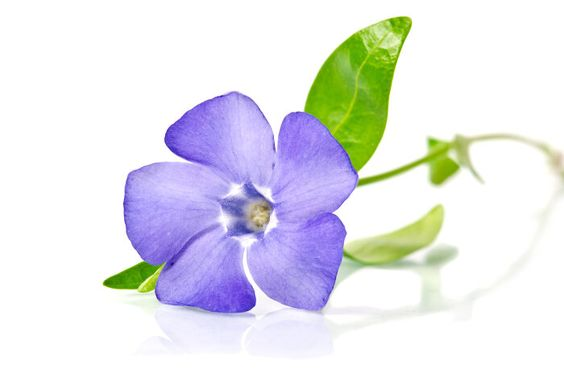

Morning Glory, belonging to the Ipomoea genus, is a group of flowering plants renowned for their enchanting blooms and rapid growth. This versatile and diverse species is part of the Convolvulaceae family, encompassing over a thousand species. Among the most popular varieties are the Ipomoea purpurea, commonly known as the common morning glory, and Ipomoea tricolor, the heavenly blue morning glory.
The classic flower color for morning glories is bright blue but they also can be found in white, pink, red, purple, and even bi-colored. Their trumpet-shaped flowers open in the morning and close after just a few hours. The hotter and sunnier the day, the quicker they close.
In many cultures, morning glory is associated with love, affection, and spiritual enlightenment. Its delicate blooms represent the fleeting nature of beauty and remind us to embrace each day with gratitude.
